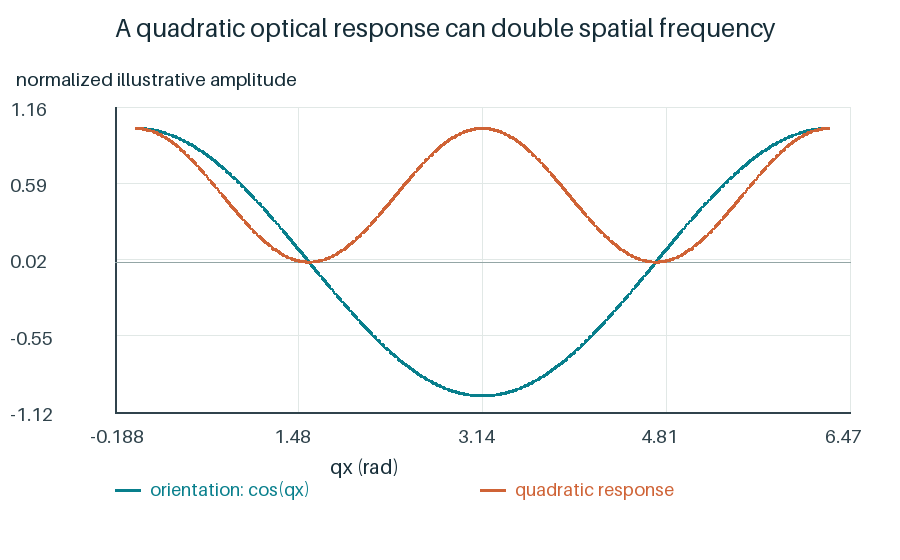

周期对应与强度模型提供了怎样的结构线索？
显微强度纹理与衍射透射场可以突出不同的空间频率。周期对应和光强拟合提供结构线索，但两种测量不能直接等同于分子取向。

非线性的取向—光程映射也可能产生第二相位谐波。不过，二次关系本身不能判定取向基频，最简单的弱倾斜修正也不足以解释全部拟合幅度。
| 本次从同帧像素重算 | 周期 µm |
|---|---|
| 左侧两频率的和差组合 | 13.83, 14.33 |
| 右侧条纹 | 13.92 |
约13.83、14.33 µm的组合周期与另一条纹区的13.92 µm接近，但区域不同，方向仍有差别。长度联系不能独立证明同一个取向模态或相干结构。
我们从图样观察出发，建立位置与相对测光方法，再用衍射和显微两条路线测量周期，检验光强分配模型。已有结果支持若干有效光学描述，跨轮失配与微观对应尚未闭合。
下一步需要同区域、同状态的配对观察，以及更充分的响应标定和时间记录。
显微图的强度FFT用于测纹理频率；相位模型对复透射场exp(iφ)求傅里叶分量，用其模平方计算衍射强度。两者在研究问题上相互联系，物理输入和含义不同。
本次计算范围 · 论文讨论双击Mac或Windows启动器，在研究界面选择本节的案例，再点击分步计算或计算整个案例。
命令行参数：
--cli research --chapter discussion --out work/discussion_01
每次写入新目录。下方数据记录说明了本节实际重算范围。